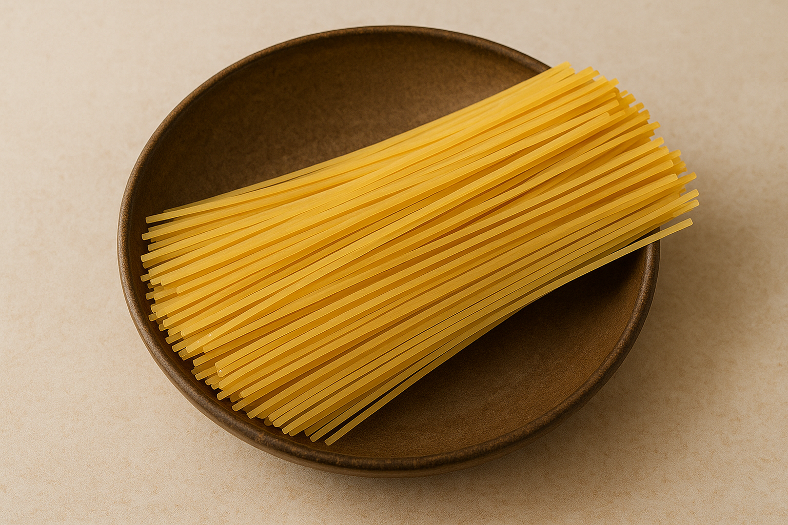
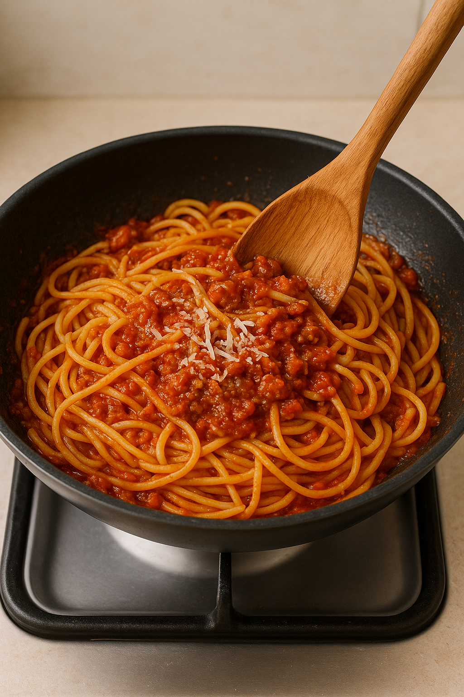

Classic Spaghetti Bolognese
A hearty and comforting Italian pasta dish made with a rich, slow-cooked meat sauce.
This classic recipe is perfect for family dinners and gatherings.
It’s delicious, filling, and guaranteed to satisfy everyone at the table.
Recipe Information
Preparation time: 15 minutes
Cooking time: 1 hour
Servings: 4 people
Difficulty level: Intermediate
Ingredients
- 400g spaghetti

- 2 tablespoons olive oil
- 1 large onion, finely chopped
- 2 garlic cloves, minced
- 500g ground beef (or mixed beef and pork)
- 400g canned chopped tomatoes
- 2 tablespoons tomato paste
- 1 teaspoon dried oregano
- 1 teaspoon dried basil
- 1 teaspoon sugar
- Salt and pepper to taste
- Freshly grated parmesan (for serving)
Instructions
- Heat olive oil in a large pan over medium heat.
- Add chopped onion and garlic, sauté until softened and fragrant.
- Stir in the ground beef and cook until browned all over.
- Mix in chopped tomatoes, tomato paste, oregano, basil, sugar, salt, and pepper.
- Reduce heat to low, cover, and let simmer for 45 minutes, stirring occasionally.
- Meanwhile, cook the spaghetti according to package instructions until al dente.
- Drain pasta and serve topped with the rich Bolognese sauce.
- Sprinkle with freshly grated parmesan before serving.
Tips & Notes
For extra flavor, add a splash of red wine while simmering the sauce.
You can also prepare the sauce ahead of time — it tastes even better the next day!

Nutrition Facts (per serving)
- Calories: 520 kcal
- Protein: 28g
- Carbohydrates: 60g
- Fat: 18g